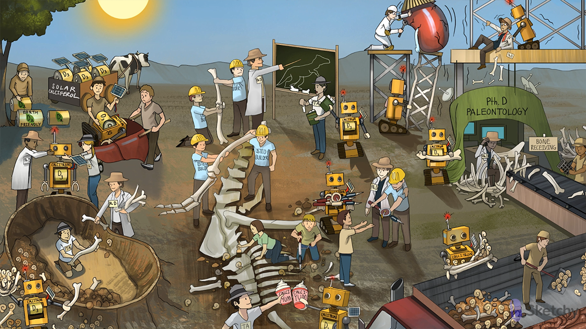

Osteo-builders: osteoblasts (activated by teriparatide and vitamin D → increase bone mineral density)
Destructive classmates: osteoclasts (indirectly activated by teriparatide and vitamin D → increase bone resorption/turnover)
Released calcified bones: osteoclasts release calcium from bone
Released P fossil: osteoclasts release phosphate from bone
PthD paleontologist: parathyroid hormone (PTH)
PthD lab: parathyroid gland
Calcified bone receiving: calcium-sensing receptor on the parathyroid gland (senses increased serum calcium)
PthD stuck behind bones: high serum calcium levels inhibit PTH production and secretion
PthD convincing osteo-builder to give up crank-drill: PTH stimulates osteoblasts to release receptor activator of nuclear factor kappa-B ligand (RANKL) → activates osteoclasts
Classmate receiving crank-drill: RANKL binds to RANK on the osteoclast surface → increased differentiation and activity → increased bone resorption
PthD teaching osteo-builders: PTH stimulates maturation of osteoblasts → increased bone formation (net effect of PTH)
PthD gathering bones and dropping P fossils: PTH increases calcium resorption by the kidney (and increases phosphate excretion)
1-head added to Calci-TRON: 1-alpha-hydroxylase in the kidney converts 25-hydroxyvitamin D into 1,25-dihydroxyvitamin D
PthD adding final piece to Calci-TRON: PTH increases activity of 1-alpha-hydroxylase in the kidney → increased production of 1,25-dihydroxyvitamin D (calcitriol)
PthD teaching assistant (TA): teriparatide (recombinant PTH)
TA teaching osteo-builders: intermittent doses of teriparatide stimulates maturation of osteoblasts → increased bone formation
Fresh piece of calcified chalk: teriparatide can be used to treat osteoporosis (increase bone density)
TA gathering bones and dropping P fossils: teriparatide increases calcium resorption by the kidney (and increases phosphate excretion)
TA adding final piece to Calci-TRON: teriparatide increases activity of 1-alpha-hydroxylase in the kidney → increased production of 1,25-dihydroxyvitamin D (calcitriol)
Solar D3 battery: vitamin D3 (cholecalciferol) is obtained via dairy products or UVB radiation in sunlight
Earth-friendly D2 battery: vitamin D2 (ergocalciferol) is obtained via plants
Robot body added to D battery in liver-barrow: 25-hydroxylase in the liver converts vitamin D to 25-hydroxyvitamin D
Calci-TRON gathering bones and fossils from dump site: calcitriol stimulates reabsorption of calcium AND phosphate by the kidney
Calci-TRON gathering bones and fossils from GI truck: calcitriol stimulates intestinal absorption of calcium AND phosphate
Calci-TRONl delivering crank-drills: calcitriol stimulates osteoblasts to release RANKL → activates osteoclasts
Calci-TRON collapsing PthD lab: calcitriol inhibits PTH production by the parathyroid gland
Calci-TRON teaching osteo-builders: calcitriol stimulates maturation of osteoblasts → increased bone formation
Fresh piece of calcified chalk: calcitriol can be used to treat osteoporosis (increase bone density)
Calci-TRON stabilizing rickety tower: vitamin D (e.g. calcitriol) can be used to treat osteoporosis (increase bone density)
Calci-TRON stabilizing broken kidney: calcitriol can be useful in chronic kidney disease (prevent hypocalcemia)
Scaly knee and elbow pads: topical vitamin D can be used to treat psoriasis
Calci-TRON saving falling calcified bones: calcitriol is useful in the long term management of hypocalcemia (e.g. hypothyroidism)
Falling PthD: hypocalcemia is commonly caused by hypoparathyroidism (decreased production of calcitriol by the kidney)
Undone bowtie on PthD: thyroid surgery can cause hypoparathyroidism and hypocalcemia
Shaking structure: hypocalcemia can cause seizure
Tense fist: hypocalcemia can cause paresthesias, muscle cramps, trismus, and tetany
Raised calci-yum ice cream: teriparatide and vitamin D therapy can cause hypercalcemia
Calculator at the calcified bone receptor: cinacalcet (a calcimimetic) activates the calcium sensing receptor on the parathyroid gland → decreased production of PTH
Calculating pile of calcified bones: cinacalcet is useful in the treatment of hypercalcemia due to hyperparathyroidism
Shoveling fossils in the GI truck: sevelamer (a phosphate binding polymer) decreases absorption of phosphate in the GI tract
Shoveling pile of fossils: sevelamer is useful in the treatment of hyperphosphatemia due to chronic kidney disease